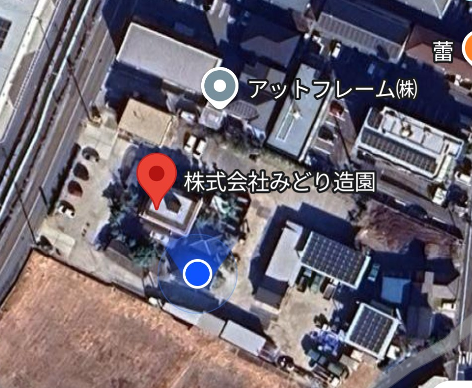

🌲
みどり造園 社内マップ
📷 航空写真
🏷️ 名前
＋ 大きく
− 小さく
✏️ メモ
🖨️
1階・屋外
2階
ヒット
道 路
家
遊歩道
道 路
通 り 道
広い道（中型車２台）
自宅へ
通 路
正面入口 → フートンへ
⬅ 北入口
駐車3台
ゴミ置場
寮
植栽
北社員駐車場（約12台）
会長畑
砂利道（狭い・車は通れない）
N
自宅駐車場
自宅
草
枝
枝
混合
アームロールの箱（4個）
入口➡
細い道（人だけ）
下の事務所
木材置き場
シャッター庫
29-1
29-2
29-3
29-4
29-5
トイレ
洗い場
板木置場
竹置場
コンプレッサー
北側屋根付き駐車場
ハンマー
置き場
佐野さん
作業場
西社員駐車場（約10台）
生垣
看板
作業台
農薬庫
工具庫
機械庫
事務所（2階）
木造2階建て
詰所（1階）
⬅入口
階段(東)
車1台
第二更衣室
ゴミ箱
女性
更衣室
男子
更衣室
フートン
くまで
脚立
雨水タンク
階段（左→右へ登る）
屋根駐車場（２階クレーン）
脚立置き場
産廃置き場
パッカー置き場
⬅ 正面入口
※おおよその配置イメージ図です（縮尺・建物の形は目安）

✏️ メモ・要望
道具の場所や、地図に足したい事を教えてください
書き方
①
番号 と 道具
例「13 じょうろ」「29-2 に ひりょうを うごかした」
②
地図への要望
例「洗い場の場所がちがう」「○○の置き場を足してほしい」
送る
▼ みんなが書いたメモ（地図に入れる前） 新しい物が上
📋 場所一覧（
35
か所） タップで写真
📷 写真はまだありません（タップで閉じる）
✕
‹
›
✏️ ここのメモを書く（道具がある・動かした など）
✏️ メモを送る
道具の場所を教えてください。集まったメモを見て、地図に入れていきます。
場所
どんな事
ここにあります
ここへ動かしました
新しく買って ここに置きました
ここには もうありません
そのほか・お願い
道具の名前
ひとこと（書かなくてもよい）
やめる
送る